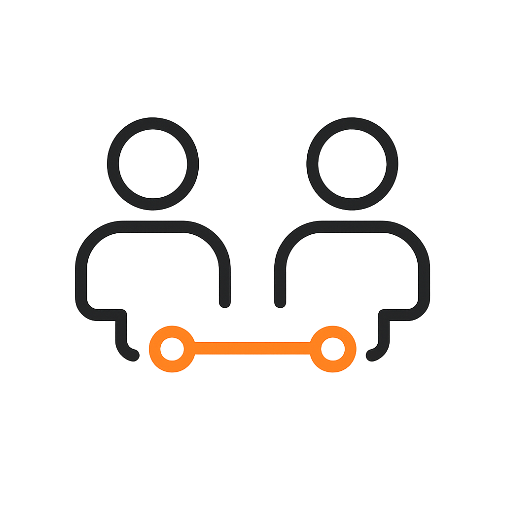

Veyron Talent — Experts die digitale groei bouwen
Veyron Talent vormt de brug tussen strategie en uitvoering. We verbinden bedrijven met top-experts binnen één kwaliteitskader: flexibel, resultaatgericht en betrouwbaar. Elk traject gebeurt onder de regie van Veyron.
Projectteams
Veyron assembleert multidisciplinaire teams (developers, designers, AI-specialisten, marketeers, projectmanagers) voor interne of klantprojecten.

Outsourcing
Tijdelijke versterking binnen het Veyron-kader. Eén of meerdere experts inzetbaar op locatie of remote — zonder lange contracten of vaste overhead.

Directe Werving
Wij koppelen bedrijven rechtstreeks aan de juiste experts uit ons netwerk — met Veyron als trusted filter voor kwaliteit, betrouwbaarheid en rendement.